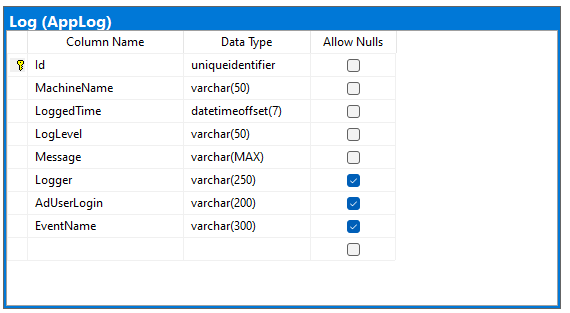
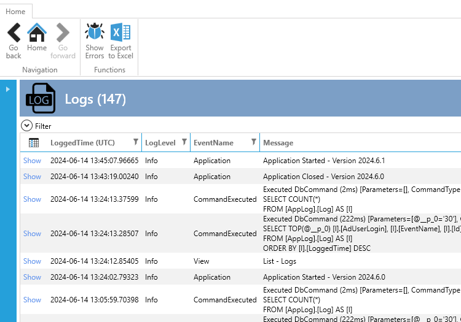
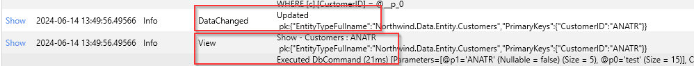
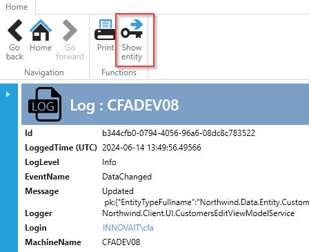

Log Extension
The Log Extension provides two main features:
- Logging data to a database table in the SQL database.
- A user interface for viewing and searching the logs.
To implement the Log Extension, follow the instructions in the readme.txt that appears in Visual Studio after adding the extension.
Implementation
The SQL-script creates 1 table and 1 stored procedure. The table is shown below. This table contains all the logs.

The stored procedure [AppLog].[DeleteLog] deletes log x number days back. It can be setup in SQL schedule job so the table only contains for example the last 300 days logs.
CREATE PROCEDURE [AppLog].[DeleteLog]
@numberOfDaysBack int
AS
BEGIN
declare @temp int = @numberOfDaysBack*-1
DELETE [AppLog].[Log]
WHERE [LoggedTime] < DATEADD(day, @temp, getdate());
END
User Interface
Once the Log Extension is implemented, you will have a user interface for viewing and searching logs.

The interface includes standard search functionality, similar to what you're already familiar with.
In the list, if you have an EventName such as "DataChanged" or "View" (and it is a show-view).

You can click on "Show" (on the left) to navigate to the show-view for that log.
Notice the menu "Show entity." If you click this, you can see the entity that has been updated.

Logging to Database
The Log Extension uses NLog for logging to the database.
The configuration of what to log is in the nlog.config file in the client project.
To log events in your application, use the ILogger interface, which is standard in .NET. See Example here